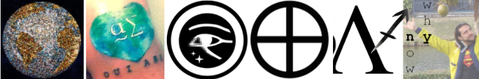

I am accepting charitable donations,.
ETH: 0x66e2871ef39334962fb75ce34407f825d67ec434 | BTC: 38B6vGaqNvMyTtoFEZPmNvMS7icV6ZnPMm | xDAI: 0x66e2871ef39334962fb75ce34407f825d67ec434
SON Ye)
R O C K O F . . . S A G E S ?
I T R E A L L Y D O E S M E A N "FREEDOM" B R E A D I S L I F E
Tying up loose eadds, in a similar vain to the connection between the Burning Bush and universal voting now etched by-stone, there exists a similar missing Link connecting the phrase "it's not a a gam" to Mary Magdeline to a pattern that shows us that the Holy Trinity and our timelines are narrated by a series of names of video game systems and their manufacturers from "Nintendo" to Genesis and the rock of SEGA. Through a "kiss" and the falling of a wallthe words bread and read are tied up and twisted with the story of this Revelation and the heart of the word Creation, "be the reason it's A.D." It's a strong connection between the idea that virtual reality and Heaven are linked by more than simply "technology" but that this message that shows us that these tools for understanding have fallen from the sky in order to help us understand why it is so important, why I call it a moral mandate, that we use this information to follow the map delivered to us in the New Testament and literally end world hunger, and literally heal the sick; because of the change in circumstance revealed to us. These simple things, these few small details that might seem like nothing, or maybe appear to be "changing everything" they are not difficult things to do, in light of Creation, and few would doubt that once we do see them implementied here... the difference between Heaven and Hell will be ever so clear.
A while ago, in a place called Kentucky... this story began with a sort of twisted sci-fi experience that explained a kind of "God machine" that could manipulate time and reality, and in that story, in that very detailed and interesting story that I lived through, this machine was keyed to my DNA, in something like the "Ancient technology" of Stargate SG-1 and Atlantis mythology. My kind brother Seth made a few appearances in the story, not actually in person but in fairly decent true to life holograms that I saw and spoke to every once in awhile. He looked a little different, he had long hair; but that's neither here nor there, and he hasn't really had long hair since I was a little boy. He happens to be a genetic engineer, and I happen to be a computer person (although he's that too, now; just nowhere near as good as me... with computers) so the story talked a little bit about how I would probably not have used DNA as a key, since I'm not a retard, and he probably wouldn't either, because works in that field (cyclone, huracan, tornado). So then the key we imagined was something ... well, Who cares what the key is, right?
o back to the task at hand, not so long ago, in a place called Plantation I was struck by lightning, literally (well not literally) the answer to a question that nobody knew was implanted in my mind, and it all came from asking a single simple question. I was looking for more chemistry elements in the names of the books of the Holy Bible, after seeing Xenon at the "sort of beginning" of Exodus, where it screams "let there be light" in Linux and chemistry (and I've told you that a hundred times by now). So it didn't take long to follow the light of that word and read Genesis backwards, and see, at the very beginning of that book, Silicon... in reverse.

So, what about God's DNA, anyway?
What's he really made of?
SIM MON S WILD ER ROD DEN BERRY
o after seeing Silicon, and connecting that to the numerous attempts I've made to show a message connecting The Matrix to the Fifth Element (as Silicon) describing what it is that God believes we should do with this knowledge--and see that it is narrated as the miracles of Jesus Christ in the New Testament... these names came to me in quick succession, an answer to the question. I suppose any Gene will do, these three though, have a very important tie to the message that connects Joshua's Promised Land of flowing Milk and Honies to ... a kiss that begins the new day (I hope) ... and a message about exactly how we might go about doing magical things like ending world hunger and healing the sick using technology described ... in Star Trek and Stargate. A "religion of the Stars" is being born.
That's great... it starts with an earthquake. R.E.M. and a band ... 311. Oooh, I can see it coming down... The Petty Reckless. An evening's love starts with a kiss. Dave Matthews Band. I wanna rock and roll all night and party every day. Adam. I mean Kiss. Are you starting to see a pattern form? Birds, snakes, and aeroplanes? It's that, it's the end of the world as we know it, and I feel fine.
In that song we see clues that more than just the Revelation of Christ is narrated by John on an island called Patmos. There yet another Trinity, starting with "Pa" and hearting Taylor Momsen's initials... most likely for a reason... and the Revelation ends with a transition that I hope others will agree with me turns "original sin" into something closer to "obviously salvation" when we finally understand the character that is behind the message of da i of Ra... and begin to see the same design in the names of Asmodai and in this Revelation focusing on freedom and truth that really does suggest Taylor can't talk to me in any way other than "letting freedom sing" in this narrative of kismet and fate and free will and ... then we see that narrative continue in the names of bands, just like the 3/11/11 earthquake is narrated in not just R.E.M.'s song but in the name 311. Just like the 9/11 attack is narrated not just in that same song (released in 1987) and "Inside Job" (released in 2000) but also in "Fucked up world."
Dear all of you walking dumb and blind, this same quake is narrated in Taylor's Zombie; waiting for the day to shake, all very similar to Cairo and XP, perhaps a "fad" of doublethink in the minds of the authors singing about a clear prophesy in the Bible; this connection between the day, 3/11 though, and the name of a band and the day of an arrest and the verse Matthew that tells you clearly you have now been baptized in water and fire... it shows us the design of a story whose intent and purpose is to ensure that we no longer allow for things like hurricanes and earthquakes and murder and rape to be "simulated" that we build a better system, that doesn't allow for 'force majeure" to take lives for no reason at all.
Not just in band names, but in the angels names too, in all of our names; we see this narration continue. The Holy Water that is central to the baptism of Christ is etched into Taylor's name, between "sen" and "mom" the key to the two Mary's whose names contain the Spanish for "sea" in a sort of enlightenment hidden in plain sight. In "Simmons" the key connection between today, this Biblical Monday, and the word "simulation" that ties to Simpsons and simians and keep it simple stupid, and in Simmons the missing "s" of Kismet, finally completing the question.
It's a song and dance that started a long time ago, as you can see from the ancient Hebrew word for "fate" and in more recent years a connection to the ballroom of Atlantis in the Doors 5 to 1 and Dave sang about it in Rapunzel and then Taylor shook a tambourine on the beach only minutes away from me--but never said "hi." The battle of the bands continues tying some door knocking to a juxtaposition between "Sweet Things" and "Knocking on Heavens door" all the way to a Gossip Girl episode where little J asked a question that I can't be sure she knew was related, she said... "who's that, at the door?"
What it really all amounts to, though, is the whole world witnessing the Creation of Adam and Eve from a little girl stuttering out "the the" at the sight of the Grinch himself, and then later not even able to get those words off her lips... about seeing how Creation and modern art are inextricably tied to religion, to heaven, and to freedom.
The bottom line here, hopefully obvious now, is that you can't keep this message "simple" it's a Matrix woven between more points of light than I can count, and many more that I'm sure you will find. It's a key to seeing how God speaks to me, and to you; and how we are, we really are that voice. Tay, if you don't do something just because God called it "fate" you are significantly more enslaved than if you do--and you wanted to. "Now I see that you and me, were never meant, never meant to be..." she sang before I mentioned her, and before she ever saw me... in a song she calls "Nothing Left to Lose" and I see is not really just another word for freedom.
We have plenty to lose by not starting the fire, not the least of which is Heaven itself. Understand what "force majeure" really means to you and I. Ha, by the way.
"DADDY, I WANT IT NOW."
VERUKA SALT. whose name means "to see (if) you are the Body of Christ" whined, in the story of Will Why Won Ka, about nothing more or less than Heaven on Hearth, than seeing an end to needless torture and pain. To see if you are the "Salt of the Earth" warming the road to Heaven; honestly to see if you can break through this inane lie of "I don't understand" and realize that breaking this story and talking about what is being presented not just by me and you but by history and God himself is the key to the car that drives us home. To see how Cupid you really are.
STOP NODDING, TURN AROUND AND CALL A REPORTER.
The story of Willy Wonka ties directly to the Promised Land of Flowing Milk and Honey to me; by showing us a river of chocolate and a the everlasting God starter, (er is it guardian of B stopper) that opens the doors of perception about exactly what kinds of mistake may have been made in the past in this transition to Heaven that we are well on the way of beginning. Here, in the Land of Nod, that is also Eden and also the Heart of the Ark we see warnings about "flowing milk and honey" being akin to losing our stable ecosystem, to losing the stuff of life itself, biology and evolution, and if we don't understand--this is probably exactly the mistake that was made and the cause of the story of Cain and Abel. So here we are talking about genetic engineering and mind uploading and living forever, and hopefully seeing that while all things are possible with God--losing the wisdom of the message of religion is akin to losing life in the Universe and with that any hope of eternal longevity.
With some insight into religion, you can connect the idea that without bees our stable ecosystem might collapse, to the birds and the bees, and a message about stability and having more than one way to pollinate the flowers and trees and get some. Janet and Nanna, by the way, both have pretty brown eyes, but that probably comes as no surprise to you.
Miss Everything, on the other hand (I hear, does not have brown eyes), leads us to glimpse how this message about the transition of our society might continue on in the New Testament, and suggest that we do need to eat, and have dinner conversation, and that a Last Supper might be a little bit more detrimental to our future than anyone had ever thought, over and over and over again. To see how religion really does make clear that this is what the message is about, to replace the flowing milk we have a "Golden Cow" that epitomizes nothing less than "not listening to Adam" and we have a place that believes the Hammer of Judah Maccabee should be ... extinct. You are wrong.
Of course the vibrating light here ties this Gene to another musical piece disclosing something... "Wild Thing" I make your heart sing. You can believe the Guitar Man is here to steal the show and deliver bread for the hungry and for the wise. Here's some, it's not just Imagine Dragons telling you to listen to the radio but Jefferson Starshiptoo, and Live.
When you wake up, you can hear God "singing" to you on the radio every single day; many of us already do. He's telling you to listen to me, and I do not understand why you do not. You don't look very Cupid, if you ask me.
WHAT DO YOU THINK YOU ARE,
DAN RE Y NO LDS?
I think we all know what the Rod of Jesus Christ is by now.
It is a large glowing testament to freedom and truth
It is the doorway to seeing that what has been going on in this place hasn't been designed to hide me, but to hide a prosperous future from you--to hide the truth about our existence and the purpose of Creation--that all told, you are standing at the doorstep of Heaven and stammering your feet, closing your eyes, and saying "you don't want to help anyone."
If delivering freedom, truth, and equality to you does not a den make,
well, you can all suck it

Between Stargate and Star Trek it's pretty easy to see a roadmap to very quickly and easily be able to end world hunger and heal the sick without drastically changing the way our society works, it's about as simple as a microwave, or a new kind of medicine--except it's not so easy to see why it is that you are so reluctant to talk about the truth that makes these things so easy to do. You see, your lack of regard for anyone anywhere has placed you in a position of weakness, and if you do nothing today, you will not be OK tomorrow.
It's pretty easy to see how Roddenberry's name shows that this message comes from God, that he's created this map that starts with an Iron Rod throughout our history proving Creation, whose heart is a Den of Family who care about the truth, and about freedom, and about helping each other--not what you are--you are not that today. Today you are sick, and I'd like you to look at the mirror he's made for you, and be eshamden (or asham).

Realize, realize... what you are. What you've become, just as I have... the devil in a sweet, sweet kiss.
-Dave J. Matthews